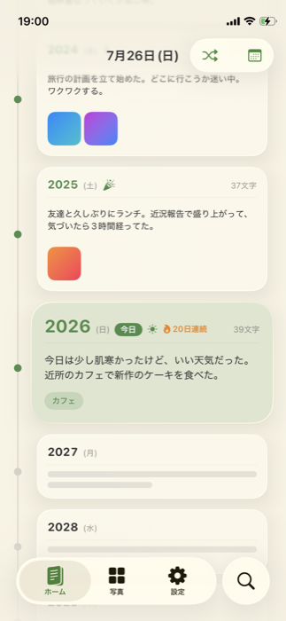
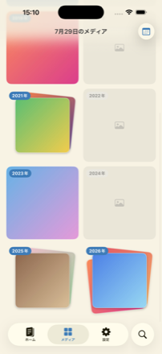
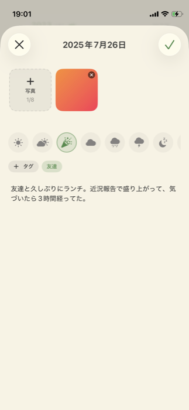
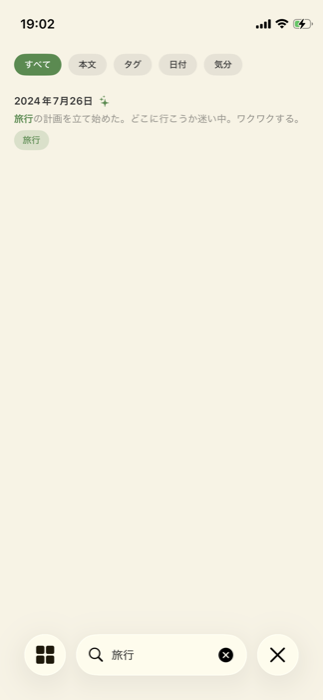
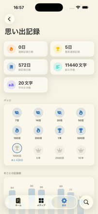

めぐる日記
同じ日を、10年分。積み重なるほど、自分だけの一冊になる。
今日のページを開くと、去年の同じ日、そのまた前の年の同じ日が、すぐ隣に並びます。 「去年の今日は何をしていたっけ」――そんなふとした問いに、めくらずに答えてくれる日記です。
毎年同じ日付に、少しずつ書き足していく。1年目はただのメモでも、5年、10年と積み重なるほど、 同じ日の自分をいくつも見比べられる、自分だけの記録になっていきます。
できること
毎日、今日のページに書く
ホーム画面で年のカードをタップするだけ。連続記録日数もひと目で分かります。
メディアタブで見比べる
同じ月日の記録を年ごとに並べて表示。写真も動画もLive Photoもタップでプレビュー、長押しで編集できます。
タグと検索で整理
気分・タグ・日付で日記を分類。後からすぐに見つけられます。
Face ID / パスコードで保護
アプリロックを有効にすれば、日記を他の人に見られる心配はありません。
ゴミ箱でうっかり削除も安心
削除した記録は30日間ゴミ箱に保管され、いつでも復元できます。
ウィジェット対応
ホーム画面・ロック画面のウィジェットで、連続記録日数や過去の記録をすぐ確認できます。
こんなシーンに
- 今日の出来事を、ふと去年の同じ日と比べてみたいとき
- 誕生日や記念日に、これまでの積み重ねを振り返りたいとき
- 写真や動画と一緒に、その日の空気ごと残しておきたいとき
- 三日坊主にならず、ゆるく長く続けられる記録が欲しいとき
スクリーンショット





近況
審査中
2026年7月、App Storeの審査に提出しました。公開され次第、このページのリンクを差し替えます。
次に着手したいのはiPad対応。今はiPhone向けのレイアウトがそのまま大きい画面に表示されているだけなので、 画面サイズに合わせて作り直す予定です。